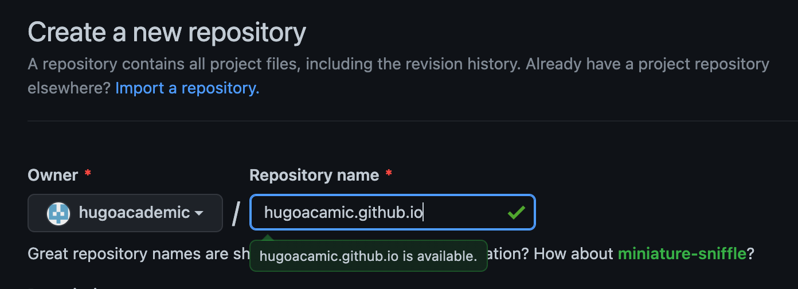
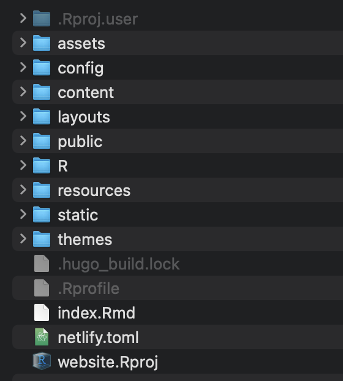

How To Make A Personal Website with Hugo

Introduction
During the second year of my PhD, I decided that I wanted to have a personal website. After (too many) hours of research, I decided to build it using Hugo, and I picked the Wowchemy theme, also known as Hugo Academic. In this tutorial, I am going to share my guide to building a website on Github Pages so that you don‚Äôt have to go through all the pain I went through üòÅ.
Before we start, I have to warn you. If you don’t care about personalization or if you have very little time to spend on building a website, I strongly recommend Google Sites, which is, in my opinion, the fastest and easiest way to build an academic website. However, if you enjoy customizing your website, or if you like my template, then this guide might be useful.
Also, note that Hugo offers many other website templates. I suggest checking them out. Some interesting alternatives are:
However, in this guide, I will concentrate on the Hugo Academic theme, since it’s the one I used for my website and I believe it’s the best one for building academic profile pages. But the first part of this guide is general and it works for any Hugo theme.
Create Website
0. Prerequisites
Before we start, I will take for granted the following:
1. Create Github Repository
First, go to your Github page and create a new repository (+ button in the top-right corner).
Name the repository username.github.io where username is your Github username.

In my case, my github username is matteocourthoud, therefore the repository is matteocourthoud.github.io and my personal website is https://matteocourthoud.github.io. Use the default settings when creating the repository.
2. Install Blogdown and Hugo
Now you need to install Blogdown, which is the program what will allow you to build and deploy your website, and Hugo, which is the template generator.
Switch to RStudio and type the following commands
# Install blogdown
install.packages("blogdown")
# Install Hugo
blogdown::install_hugo()
Now everything should be ready!
3. Setup folder
Open RStudio and select New Project.
Select New Directory when asked where to create the project.
Then select Website using blogdown as project type.
Now you have to select a couple of options:
Directory name: here input the name of the folder which will contain all the website files. The name is irrelevant. I called minewebsite.Create project as a subdirectory of: select the directory in which you want to put the website folder.Theme: inputwowchemy/starter-academicinstead of the default theme.
Note: if you want to install a different theme, just go on the corresponding Github page (for example https://github.com/caressofsteel/hugo-story) and instead of gcushen/hugo-academic, insert the corresponding Github repository (for example caressofsteel/hugo-story).
If you go into the website folder, it should look something like
4. Build website
To build the website, open the RProject file website.Rproj in RStudio and type
blogdown::hugo_build(local=TRUE)
This command will generate a public/ subfolder in which the actual code of the website is stored.
Don’t ask me why, but the option local=TRUE seems to make a difference. Updating without it sometimes does not change the content in the public/ subfolder.
To preview the website, type in RStudio
blogdown::serve_site()
The following preview should automatically open in your browser.
Previewing the website is very useful as it allows you to see live changes locally inside RStudio, before publishing them. This is the main advantage of working in RStudio.
If the preview does not automatically open in your browser, and instead it previews inside RStudio Viewer panel, you can preview it in your browser using the upper left right-most button.
5. Publish website
Importantly, before pushing the code online, you need to open the file config.yaml and change the baseurl to your future website url, which will be https://username.github.io/, where username is your Github username.

Now that you have set the correct url, you have to push the changes from the public/ folder to your username.github.io repository on Github.
To do that, you need to get to the website folder. Let’s assume that the path to your folder is Documents/website. Open the Terminal and type
cd Documents/website/public
The following code will link the public/ folder, containing the actual code of the website, to your username.github.io repository.
# Init git in the /website/public/ folder
git init
# Add and commit the changes
git add .
git commit -m "first version of the website"
# Set origin
git remote add origin https://github.com/username/username.github.io.git
# Rename local branch
git branch -M main
# And push your updates online
git push -u origin main
Wait a few seconds (or minutes for heavy changes) and your website should be online!
If the website is not working, you can check the following:
- Is there anything in your
public/folder? (does it even exist?) If not, something went wrong when compiling the website withblogdown::hugo_build(). - Inside your
public/folder, there should be anindex.htmlfile. If you double-click on it, you should see a local preview of your website in your browser. If not, something in the website code is wrong. - Is the content of your
public/folder exactly the same as the content of your Github repository? If not, something went wrong when pushing to Github. - Did you name your Github repository
username.github.io, whereusernameis your Github username? - Did you change the
baseurloption in the fileconfig.yamltohttps://username.github.io/, whereusernameis your Github username? - You can check the list of websites deployments at
https://github.com/username/username.github.io/deployments. Control that they correspond with your commits.
If all the conditions are satisfied, but the website is still not online, maybe it’s just a matter of time. Have some patience.
Basic Customization
The basic files that you want to modify to customize your website are the following:
config/_default/config.yaml: general website informationconfig/_default/params.yaml: website customizationconfig/_default/menus.yaml: top bar / menu customizationcontent/authors/admin/_index.md: personal information
For what concerns images, there are two main things you might want to modify:
- Profile picture: change the
content/authors/admin/avatar.jpgpicture - Website icon: change the
assets/media/icon.pngpicture
In order to modify the widgets on your homepage, go to content/home/ and modify the files inside. If you want to remove a section, just open the corresponding file and select active: false. If there is no active option, just copy the line active: false in the corresponding file.
On my website, I have only the following sections set to true:
aboutprojectspostscontact
To change the color palette of the website, go to data\theme and generate a custom_theme.toml file with the following content:
# Theme metadata
name = "My custom theme"
# Is theme light or dark?
light = true
# Primary
primary = "#284f7a"
# Menu
menu_primary = "#fff"
menu_text = "#34495e"
menu_text_active = "#284f7a"
menu_title = "#2b2b2b"
# Home sections
home_section_odd = "rgb(255, 255, 255)"
home_section_even = "rgb(247, 247, 247)"
[dark]
link = "#bbdefb"
link_hover = "#bbdefb"
Then go to the config/_default/params.yaml file and set the theme to custom_theme.
You can get more information on how to personalize it here.
To change the font, go to data\fonts and generate a custom_font.toml file with the following content:
# Font style metadata
name = "My custom font"
# Optional Google font URL
google_fonts = "family=Roboto+Mono&family=Source+Sans+Pro:wght@200;300;400;700"
# Font families
heading_font = "Source Sans Pro"
body_font = "Source Sans Pro"
nav_font = "Source Sans Pro"
mono_font = "Roboto Mono"
Then go to the config/_default/params.yaml file and set the font to custom_font.
You can get more information on how to personalize it here. Importantly, by default, the website supports only fonts of weight 400 and 700. If you want a lighter font, like the Source Sans Pro I use for my website, you have to dig into the advanced customization (which requires HTML and CSS skills).
Advanced Customization
Advanced customization is possible but it’s a pain. You basically want to go inside themes\github.com\wowchemy\wowchemy-hugo-modules\wowchemy and start digging. Tip: you want to start digging in the following places:
- In
layouts\partialsto edit the HTML files - In
assets\scssto edit the SCSS code
If you want to copy my exact theme, I have published my custom theme here: https://github.com/matteocourthoud/custom-wowchemy-settings
You have to do the following:
- go inside the
themefolder - copy the content of the
custom-wowchemy-themerepository in a folder there - go to the
config.yamlfile into the MODULES section
- change the second link to the folder with the custom settings
Now your website should look quite similar to mine! :)
Examples
Here are some examples of advanced customizations you can do. For all the examples the baseline directory is you theme directory, themes/custom-wowchemy-theme if you renamed it as in the previous paragraph.
Example 1
What to have your section titles fixed on top of the screen?
-
Go to
assets/scss/wowchemy/widgets/_base.scss -
Search for
.section-heading h1 -
It should look like this

-
Add a couple of lines as follows
-
Now the section titles should stay anchored at the top of the page
Example 2
Do you want to put a background image in your home page?
-
Put the selected background image, for example
image.png, into thestatic/imgfolder (the location itself does not matter) -
Go to
assets/scss/wowchemy/widgets/_about.scss -
Add the following lines anywhere in the code
-
Now go to
layouts/partials/widgets/about.html -
Add the following lines after
<!-- About widget -->`
-
Now
image.pngshould appear as background image in your homepage.
Google Analytics
In order for the website to be displayed in Google searches, you need to ask Google to track it.
- Go to the Google Search Console website
- Use the URL Inspection tool to inspect the URL of your personal website:
https://username.github.io - Use Request indexing to request Google to index your website so that it will apprear in Google searches.
- Under Sitemap provide the link to your website sitemap to Google. It should be
https://username.github.io/sitemap.xml.
In order to receive statistics on your website, you first need to get your associated tracking code.
- Go to the Google Analytics website
- Click Admin
- Select an account from the menu in the ACCOUNT column.
- Select a property from the menu in the PROPERTY column.
- Under PROPERTY, click Tracking Info > Tracking Code.
- Your tracking ID and property number are displayed at the top of the page. It should have the form
UA-xxxxxxxxx-1
Now that we have the website tracking code, we need to insert it into the googleAnalytics section of the config/_default/params.yaml file.
marketing:
google_analytics: 'UA-xxxxxxxxx-1'
The mobile application of Google Analytics is particular intuitive and allows you to monitor your website traffic in detail. You just need to link the website from the Google Sesarch Console and then you can motitor you website from this platform. There is also a very nice mobile app for both Android and iOS to monitor your website from your smartphone.
Another good free tool to analyze the “quality” of your website is SEO Mechanic.
References
Here are the main resources I used to write this guide:
- Wowchemy website: https://wowchemy.com/docs/getting-started/
- Old Academic website: https://sourcethemes.com/academic/docs/install/
- Guide for the Terminal: https://github.com/fliptanedo/FlipWebsite2017
I hold a PhD in economics from the University of Zurich. Now I work at the intersection of economics, data science and statistics. I regularly write about causal inference on Medium.